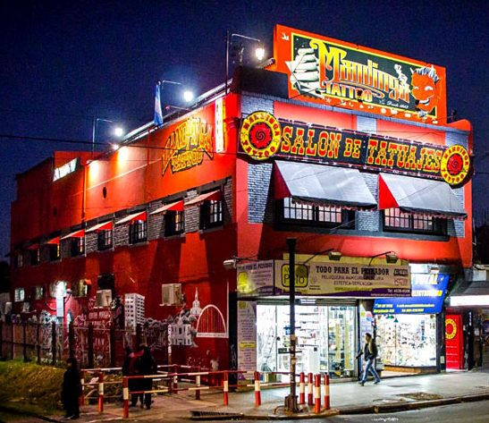

Que es Night Tattoo Studio?
Night Tattoo es el principal local de tatuajes de América Latina, con años de trayectoria en el mercado de tatuajes y Piercings, Cyrano fundador y creador de este imponente local de Tatuajes fue uno de los pioneros en Argentina de comenzar con este arte. Night Tattoo es un entorno familiar que se centra en que el cliente viva una experiencia para toda la vida, siempre garantizando la mejor atención, con los más destacados artistas y mejores insumos del mercado.
La historia de Night Tattoo comenzó en los años 90, Cyrano comenzó a incursionar en el tatuaje en un departamento de la zona de Villa Lugano. Luego logró instalarse en un stand del Mercado Central, en el que tatuaba a los trabajadores del lugar. Más tarde desembarcó en una galería de su barrio para finalmente abrir su reconocido local junto a la estación y poder emprender su segundo local en el barrio emblemático de Belgrano.
